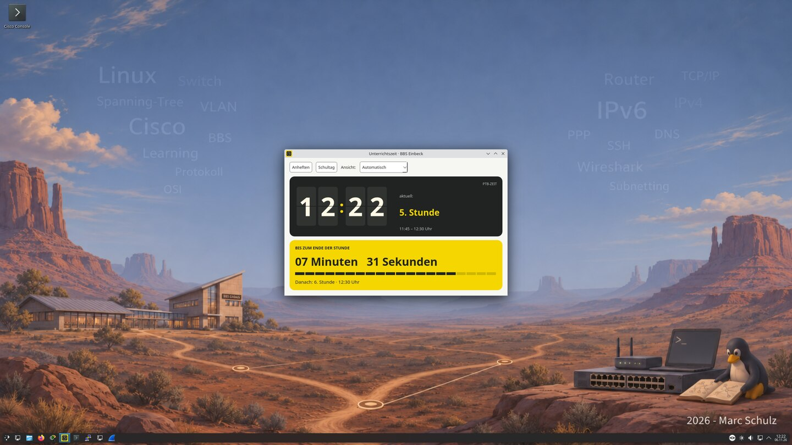
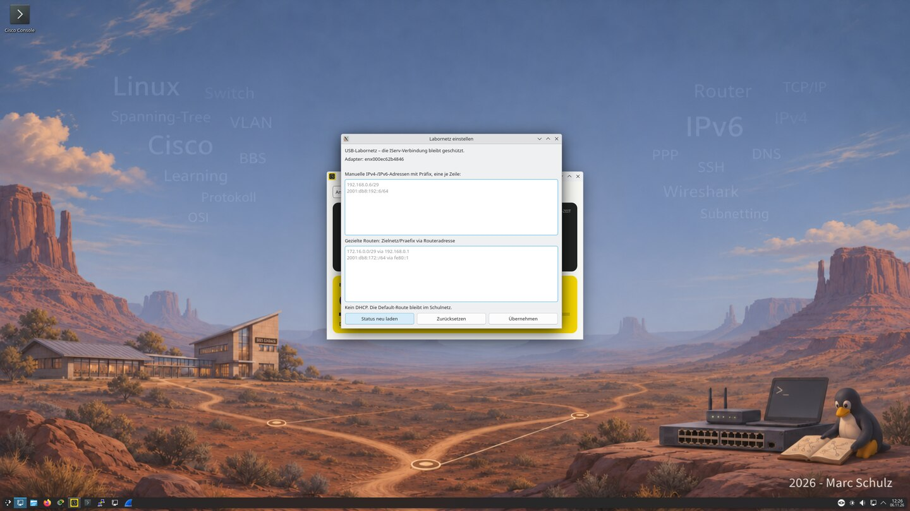

Netzwerklabor · BBS Einbeck
CISCO-LAB mit Ansible
Ein Linux-Labor für Switching, Routing und Fehlersuche an echten Cisco-Geräten.
Zum Repository ↗
- 16
- Schüler-PCs
- 8
- Zweierteams
- Debian 13
- mit KDE Plasma
01 · Der Teamplatz
Zwei Anschlüsse für zwei Netze
Die interne Netzwerkkarte bleibt mit dem IServ-Schulnetz verbunden und führt die Standardroute. Über den USB-Ethernet-Adapter erreichen die Schüler ihre Switches und Router. IPv4- und IPv6-Adressen sowie gezielte Routen stellen sie im Labornetz-Dialog ein.
PuTTY und Minicom teilen sich den Zugriff auf das USB-Konsolenkabel. Wireshark schneidet auf dem Laboradapter mit.


02 · Der Lehrer-PC
Vom Pilotclient in den ganzen Raum
Auf LAB-Teacher läuft die Webverwaltung. Lehrkräfte prüfen eine Ansible-Aufgabe, testen sie an einem Pilotclient und geben denselben Stand anschließend für den Raum frei.
- VorschauZielrechner und Aufgaben prüfen.
- PilotAm Arbeitsplatz testen und Abnahme eintragen.
- RolloutErgebnisse verfolgen und offene Clients nachholen.